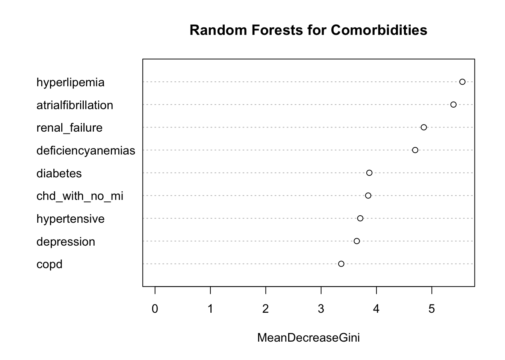
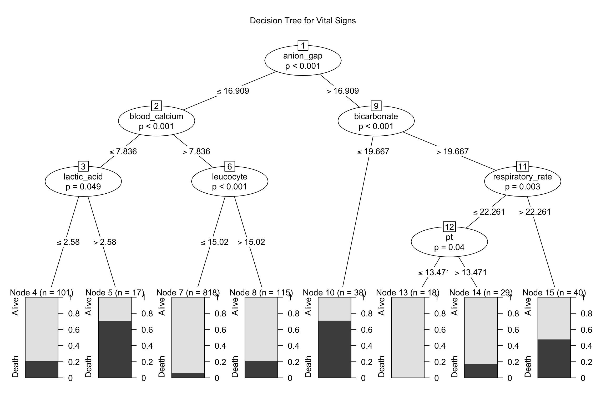
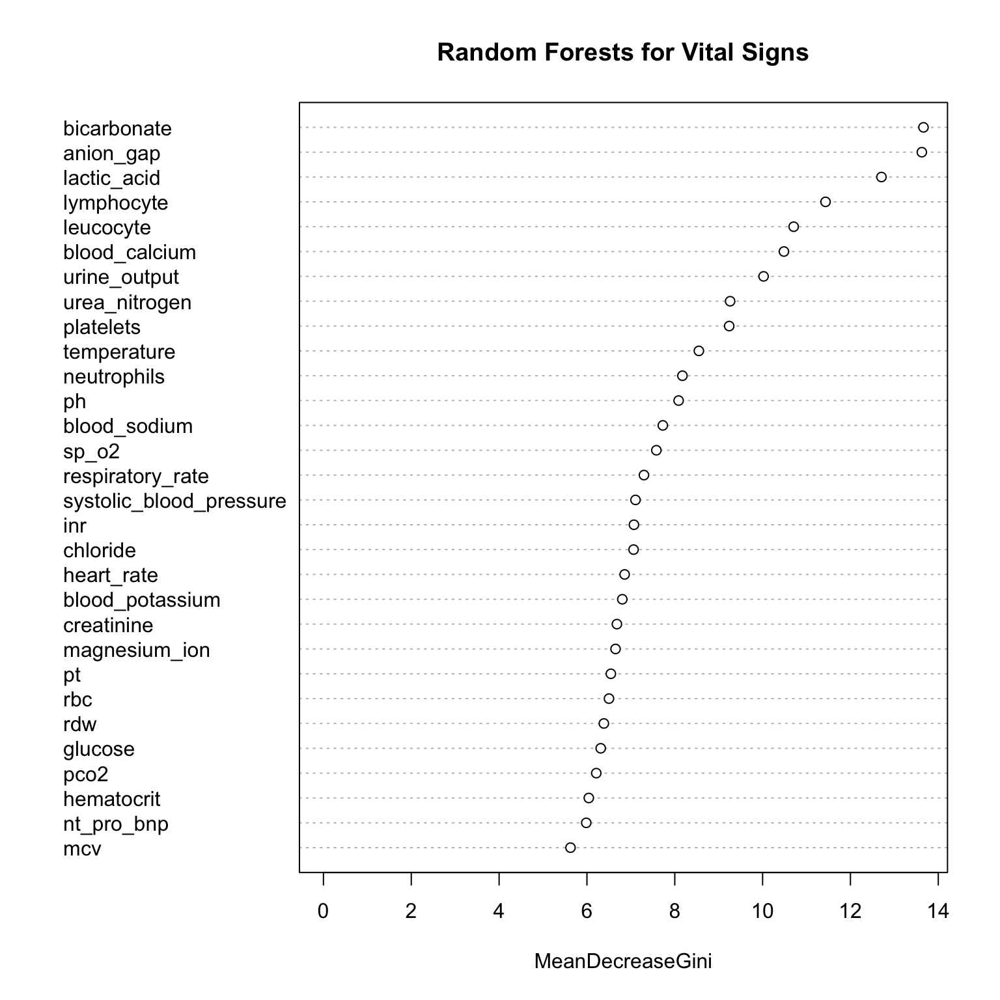
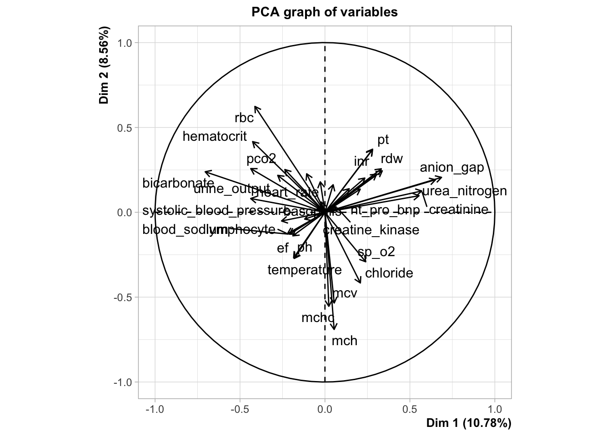
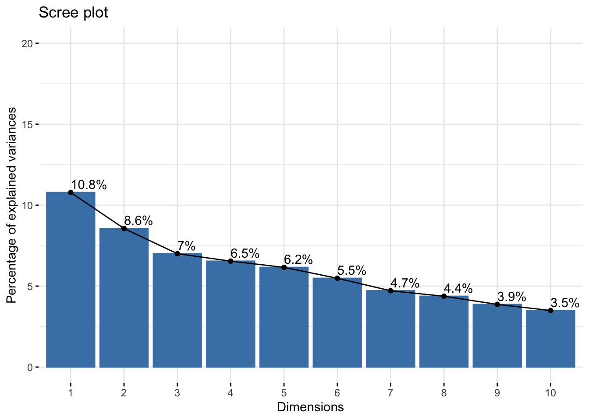
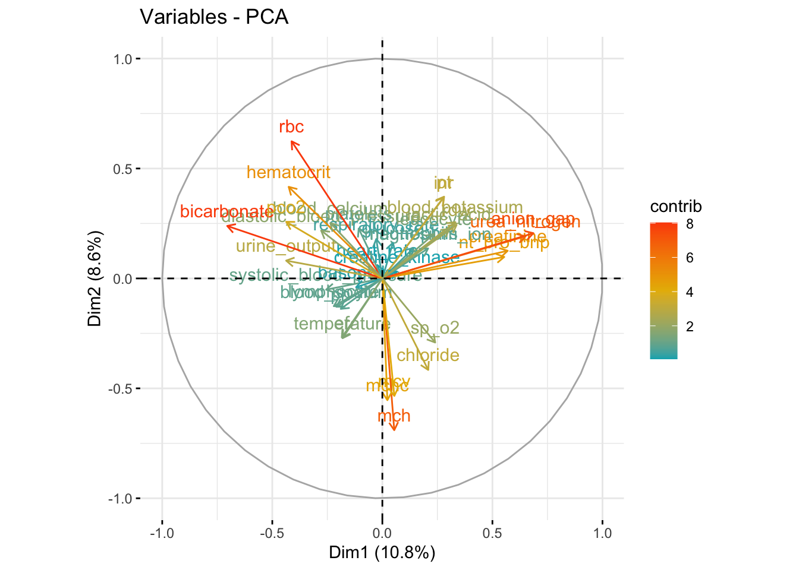
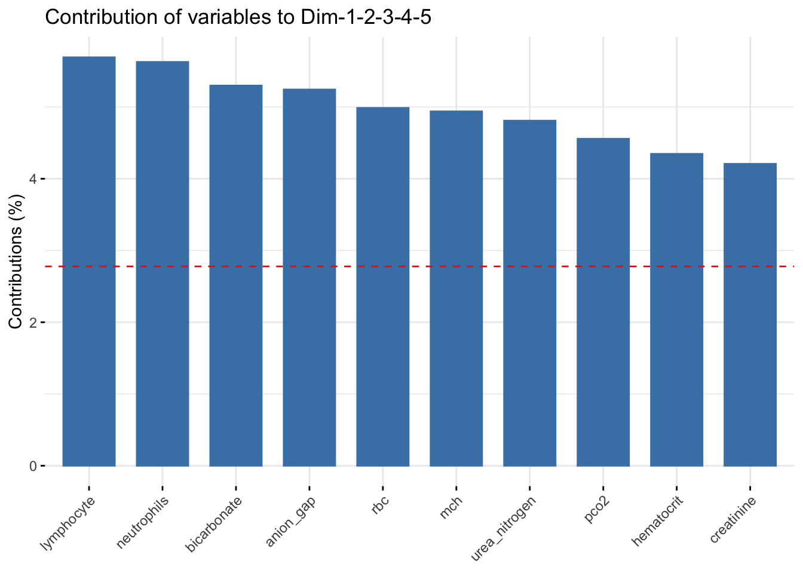

Preliminary Study
Yifei Liu
2023/11/25
library(tidyverse)
library(modelr)
library(purrr)
library(corrplot)
library(FactoMineR)
library(factoextra)
library(rpart)
library(rpart.plot)
library(randomForest)
library(party)
set.seed(1)1. Correlation between Vital Signs
#show correlation
corrplot(cor(sign_tidy |> select(-outcome)), type = "upper", diag = FALSE)
The correlation plot illustrates the relationships between vital signs pairwise.
Darker colors indicate stronger correlations, where blue signifies positive correlations and red signifies negative ones.
Strong positive correlations were observed between variables such as
rbcandhematocrit,mcvandmch,inrandpt,pco2andbicarbonate. Conversely, a strong negative correlation was found betweenneutrophilsandlymphocyte.Strong positive correlations often suggest the potential for dimension reduction by merging these variables during selection.
2. Decision Trees and Random Forests: Dimension Reduction and Core Variables Analysis
Analysis of Patient Compllications Variables
#decision tree for complications
tree_com = ctree(outcome ~ ., data = com_tidy)
plot(tree_com)
The decision tree employed variables
renal_failureandatrialfibrillationto predict the outcome, showing strong evidence (p<0.05) for selecting these two variables.However, the probability distribution at the nodes suggests that this decision-making approach might not be sufficiently reliable. This could be due to the similar effects of each variable, making it challenging to determine the next variable for refining the decision. Alternatively, it might indicate insufficient evidence to support the selection of other variables (p-values not meeting the criteria).
Furthermore, the binary nature of these patient complications variables posed certain challenges in constructing the classification tree, making characteristics of the variables hard to analyze.
#random forest for complications
rf_com = randomForest(outcome ~ ., data = com_tidy)
importance(rf_com) |> knitr::kable(digits = 3)| MeanDecreaseGini | |
|---|---|
| hypertensive | 3.707 |
| atrialfibrillation | 5.391 |
| chd_with_no_mi | 3.851 |
| diabetes | 3.871 |
| deficiencyanemias | 4.700 |
| depression | 3.645 |
| hyperlipemia | 5.552 |
| renal_failure | 4.855 |
| copd | 3.364 |
varImpPlot(rf_com)
The random forest yielded a list of variables ranked by their importance based on
mean decrease in Gini index, a parameter calculated by assessing the influence of variables on the nodes of the classification tree.In descending order of importance, the top 5 variables are:
hyperlipemia,atrialfibrillation,renal_failure,deficiencyanemias,diabetes.
Analysis of Patient Vital Signs Variables
#decision tree for vital signs
tree_sign_r = rpart(outcome ~ ., data = sign_tidy, method = "class", control = rpart.control(cp = 0.02))
print(tree_sign_r)## n= 1176
##
## node), split, n, loss, yval, (yprob)
## * denotes terminal node
##
## 1) root 1176 159 Alive (0.86479592 0.13520408)
## 2) anion_gap< 16.92121 1051 108 Alive (0.89724072 0.10275928)
## 4) blood_calcium>=7.837088 933 75 Alive (0.91961415 0.08038585) *
## 5) blood_calcium< 7.837088 118 33 Alive (0.72033898 0.27966102)
## 10) lactic_acid< 2.606667 101 21 Alive (0.79207921 0.20792079) *
## 11) lactic_acid>=2.606667 17 5 Death (0.29411765 0.70588235) *
## 3) anion_gap>=16.92121 125 51 Alive (0.59200000 0.40800000)
## 6) bicarbonate>=19.68333 87 24 Alive (0.72413793 0.27586207)
## 12) respiratory_rate< 22.4221 47 5 Alive (0.89361702 0.10638298) *
## 13) respiratory_rate>=22.4221 40 19 Alive (0.52500000 0.47500000)
## 26) lymphocyte>=10.25 17 3 Alive (0.82352941 0.17647059) *
## 27) lymphocyte< 10.25 23 7 Death (0.30434783 0.69565217) *
## 7) bicarbonate< 19.68333 38 11 Death (0.28947368 0.71052632) *rpart.plot(tree_sign_r)
tree_sign_c = ctree(outcome ~ ., data = sign_tidy)
plot(tree_sign_c)
The analysis of continuous variables related to vital signs resulted in the successful establishment of classification criteria by the decision tree, incorporating a total of 7 variables. It formed a 4-level classification structure with reasonably distributed probabilities across nodes.
The primary level classification variable is
anion_gap.The secondary level classification variables are
blood_calcium,bicarbonate.The tertiary level classification variables are
lactic_acid,leucocyte,respiratory_rate.The forth level classification variable is
pt.
#random forest for vital signs
rf_sign = randomForest(outcome ~ ., data = sign_tidy)
importance(rf_sign) |> knitr::kable(digits = 3)| MeanDecreaseGini | |
|---|---|
| heart_rate | 7.350 |
| systolic_blood_pressure | 7.044 |
| diastolic_blood_pressure | 5.303 |
| respiratory_rate | 7.380 |
| temperature | 8.205 |
| sp_o2 | 7.740 |
| urine_output | 10.679 |
| hematocrit | 5.438 |
| rbc | 6.804 |
| mch | 5.536 |
| mchc | 4.423 |
| mcv | 5.861 |
| rdw | 5.934 |
| leucocyte | 10.877 |
| platelets | 9.689 |
| neutrophils | 7.897 |
| basophils | 4.559 |
| lymphocyte | 11.767 |
| pt | 6.454 |
| inr | 7.150 |
| nt_pro_bnp | 6.092 |
| creatine_kinase | 5.432 |
| creatinine | 6.756 |
| urea_nitrogen | 9.399 |
| glucose | 6.103 |
| blood_potassium | 6.804 |
| blood_sodium | 7.324 |
| blood_calcium | 10.481 |
| chloride | 6.719 |
| anion_gap | 13.770 |
| magnesium_ion | 6.359 |
| ph | 7.745 |
| bicarbonate | 13.580 |
| lactic_acid | 12.400 |
| pco2 | 6.011 |
| ef | 2.685 |
varImpPlot(rf_sign)
Ranked by the
mean decrease gini, the top 5 variables are:anion_gap,bicarbonate,lactic_acid,lymphocyte,leucocyte.The results obtained from the random forest exhibit a overlap with the decision tree outcomes. In fact, random forest is an extension of decision trees that address over-fitting issues inherent in decision tree model. Therefore, we tend to prioritize the key variables identified by the random forest.
#pca using R build-in function prcomp()
pca_res_sign = prcomp(sign_tidy |> select(-outcome), scale. = TRUE)
summary(pca_res_sign)## Importance of components:
## PC1 PC2 PC3 PC4 PC5 PC6 PC7
## Standard deviation 1.9704 1.75519 1.58788 1.53481 1.48901 1.40515 1.30262
## Proportion of Variance 0.1078 0.08557 0.07004 0.06543 0.06159 0.05485 0.04713
## Cumulative Proportion 0.1078 0.19342 0.26346 0.32889 0.39048 0.44532 0.49246
## PC8 PC9 PC10 PC11 PC12 PC13 PC14
## Standard deviation 1.25500 1.18055 1.12159 1.08514 1.06435 1.01906 0.98288
## Proportion of Variance 0.04375 0.03871 0.03494 0.03271 0.03147 0.02885 0.02683
## Cumulative Proportion 0.53621 0.57492 0.60986 0.64257 0.67404 0.70289 0.72972
## PC15 PC16 PC17 PC18 PC19 PC20 PC21
## Standard deviation 0.94975 0.93029 0.9059 0.87727 0.8633 0.83018 0.81972
## Proportion of Variance 0.02506 0.02404 0.0228 0.02138 0.0207 0.01914 0.01867
## Cumulative Proportion 0.75478 0.77882 0.8016 0.82299 0.8437 0.86284 0.88151
## PC22 PC23 PC24 PC25 PC26 PC27 PC28
## Standard deviation 0.78710 0.77189 0.73835 0.71059 0.69022 0.63136 0.5500
## Proportion of Variance 0.01721 0.01655 0.01514 0.01403 0.01323 0.01107 0.0084
## Cumulative Proportion 0.89871 0.91527 0.93041 0.94443 0.95767 0.96874 0.9771
## PC29 PC30 PC31 PC32 PC33 PC34 PC35
## Standard deviation 0.53262 0.49727 0.38231 0.35390 0.11283 0.07647 0.03288
## Proportion of Variance 0.00788 0.00687 0.00406 0.00348 0.00035 0.00016 0.00003
## Cumulative Proportion 0.98502 0.99189 0.99595 0.99943 0.99979 0.99995 0.99998
## PC36
## Standard deviation 0.02807
## Proportion of Variance 0.00002
## Cumulative Proportion 1.00000#pca using packages `FactoMineR`, `factoextra`
res_pca_sign = PCA(sign_tidy |> select(-outcome), scale.unit = TRUE, graph = TRUE)
## Warning: ggrepel: 10 unlabeled data points (too many overlaps). Consider
## increasing max.overlaps
#PCA() function would do the data standardization automatically.
#keep 5 dimensions as result.
get_eigenvalue(res_pca_sign)## eigenvalue variance.percent cumulative.variance.percent
## Dim.1 3.8823383058 10.784273072 10.78427
## Dim.2 3.0806929385 8.557480385 19.34175
## Dim.3 2.5213605846 7.003779402 26.34553
## Dim.4 2.3556330047 6.543425013 32.88896
## Dim.5 2.2171588093 6.158774470 39.04773
## Dim.6 1.9744560329 5.484600091 44.53233
## Dim.7 1.6968202108 4.713389474 49.24572
## Dim.8 1.5750125846 4.375034957 53.62076
## Dim.9 1.3937018264 3.871393962 57.49215
## Dim.10 1.2579643101 3.494345306 60.98650
## Dim.11 1.1775311390 3.270919831 64.25742
## Dim.12 1.1328467937 3.146796649 67.40421
## Dim.13 1.0384849030 2.884680286 70.28889
## Dim.14 0.9660455818 2.683459950 72.97235
## Dim.15 0.9020277951 2.505632764 75.47799
## Dim.16 0.8654315803 2.403976612 77.88196
## Dim.17 0.8207039312 2.279733142 80.16170
## Dim.18 0.7696050551 2.137791820 82.29949
## Dim.19 0.7452352298 2.070097860 84.36959
## Dim.20 0.6892066565 1.914462935 86.28405
## Dim.21 0.6719476581 1.866521273 88.15057
## Dim.22 0.6195214896 1.720893027 89.87146
## Dim.23 0.5958147476 1.655040966 91.52650
## Dim.24 0.5451543521 1.514317645 93.04082
## Dim.25 0.5049433524 1.402620423 94.44344
## Dim.26 0.4763982493 1.323328470 95.76677
## Dim.27 0.3986187827 1.107274396 96.87404
## Dim.28 0.3025340700 0.840372417 97.71442
## Dim.29 0.2836820804 0.788005779 98.50242
## Dim.30 0.2472778493 0.686882915 99.18931
## Dim.31 0.1461572492 0.405992359 99.59530
## Dim.32 0.1252456966 0.347904713 99.94320
## Dim.33 0.0127299486 0.035360968 99.97856
## Dim.34 0.0058484104 0.016245584 99.99481
## Dim.35 0.0010810096 0.003002805 99.99781
## Dim.36 0.0007877808 0.002188280 100.00000#`variance.percent` explains the percentage of change. 70% would be adequate.
#scree plot
fviz_eig(res_pca_sign, addlabels = TRUE, ylim = c(0, 20))
#visualize the contributions of each dimension.
#result
var_sign <- get_pca_var(res_pca_sign)
var_sign$coord## Dim.1 Dim.2 Dim.3 Dim.4
## heart_rate -0.02246391 0.06090055 -0.392530078 0.3260299099
## systolic_blood_pressure -0.25558121 -0.05105447 0.190220573 0.0339117783
## diastolic_blood_pressure -0.27807267 0.21786491 0.015124638 0.4552871695
## respiratory_rate -0.02763299 0.17948997 -0.335546928 0.2666654389
## temperature -0.18072057 -0.27190713 -0.205912393 0.1346234947
## sp_o2 0.24003019 -0.29155170 0.031909909 -0.0507796416
## urine_output -0.43725294 0.08103086 0.035063741 0.2143190027
## hematocrit -0.42569719 0.41664045 -0.026923947 0.3389792493
## rbc -0.41236767 0.62385055 -0.112910279 0.3028089891
## mch 0.05403986 -0.69027140 0.087386790 0.1799180887
## mchc 0.02280423 -0.55392227 -0.141009442 0.3404398098
## mcv 0.05441586 -0.53454171 0.191828591 0.0233207116
## rdw 0.33744043 0.24411938 0.119197478 -0.1538592625
## leucocyte 0.23464198 0.20181966 -0.461443491 -0.0004189803
## platelets -0.10757415 0.22695636 -0.279416696 -0.0867225624
## neutrophils 0.14259222 0.13892791 -0.528725108 -0.5006385025
## basophils -0.11938196 -0.04007822 0.320882887 0.3481866648
## lymphocyte -0.22076603 -0.12632259 0.550206151 0.4794449340
## pt 0.28056540 0.37190432 -0.164753737 -0.0620408227
## inr 0.27891688 0.36767643 -0.155407858 -0.0650790475
## nt_pro_bnp 0.55398080 0.09778268 0.116276389 -0.0076213419
## creatine_kinase 0.06682307 0.03142546 -0.141177532 0.1100149869
## creatinine 0.56966024 0.12568562 0.447903822 0.0368800105
## urea_nitrogen 0.65085503 0.19179569 0.341940637 -0.1333378983
## glucose 0.04827023 0.16247097 -0.047026877 0.0240938819
## blood_potassium 0.33166568 0.25633318 0.378786579 0.0297641095
## blood_sodium -0.20887997 -0.12909590 -0.008583072 -0.2970508521
## blood_calcium -0.23599460 0.25204149 0.318971662 0.0788230726
## chloride 0.20849506 -0.41635980 -0.251276306 -0.0627482140
## anion_gap 0.68628769 0.20587355 0.097193294 0.3828988134
## magnesium_ion 0.20783582 0.13658310 0.207283011 -0.0803755041
## ph -0.18913475 -0.13867178 -0.293603511 0.1718440184
## bicarbonate -0.70503334 0.23884302 0.230432292 -0.3656182777
## lactic_acid 0.30401696 0.22495752 -0.195277022 0.3926850463
## pco2 -0.43693715 0.25760703 0.403227259 -0.4653029646
## ef -0.18434007 -0.26854157 -0.002609225 -0.2976239513
## Dim.5
## heart_rate -0.06151389
## systolic_blood_pressure 0.21980664
## diastolic_blood_pressure 0.13005109
## respiratory_rate 0.08044240
## temperature -0.05361588
## sp_o2 -0.22650341
## urine_output 0.02413758
## hematocrit 0.37489667
## rbc 0.19312196
## mch 0.41806200
## mchc 0.29269240
## mcv 0.34986837
## rdw -0.46462126
## leucocyte 0.19151879
## platelets 0.01502668
## neutrophils 0.47035110
## basophils -0.30728196
## lymphocyte -0.45040607
## pt -0.32997374
## inr -0.32622521
## nt_pro_bnp 0.06356329
## creatine_kinase 0.02918418
## creatinine 0.22161390
## urea_nitrogen 0.28447024
## glucose 0.17806024
## blood_potassium 0.15109416
## blood_sodium -0.04736755
## blood_calcium 0.33244064
## chloride -0.21326311
## anion_gap 0.26003168
## magnesium_ion 0.32314412
## ph -0.01637378
## bicarbonate 0.06212000
## lactic_acid -0.08203611
## pco2 0.06452242
## ef 0.06966678#shown by correlation
fviz_pca_var(res_pca_sign, col.var = "contrib", gradient.cols = c("#00AFBB", "#E7B800", "#FC4E07"))
#based on above results (`var_com$coord`)
#basically,
#(a) positive correlated variables are grouped together,
#(b) negative correlated variables are located on opposite sides of the origin,
#(c) the distance between the variable and the origin measures the quality of the variable. Variables that are far from the origin are well represented.
corrplot(var_sign$cos2, is.corr=FALSE)#shows the quality of variables.
var_sign$contrib## Dim.1 Dim.2 Dim.3 Dim.4
## heart_rate 0.01299803 0.12039099 6.110981e+00 4.512397e+00
## systolic_blood_pressure 1.68253645 0.08460949 1.435093e+00 4.881952e-02
## diastolic_blood_pressure 1.99169679 1.54072860 9.072668e-03 8.799605e+00
## respiratory_rate 0.01966810 1.04575985 4.465515e+00 3.018741e+00
## temperature 0.84124369 2.39989801 1.681628e+00 7.693679e-01
## sp_o2 1.48401526 2.75919724 4.038464e-02 1.094641e-01
## urine_output 4.92461280 0.21313387 4.876200e-02 1.949906e+00
## hematocrit 4.66775651 5.63474745 2.875031e-02 4.877964e+00
## rbc 4.38001753 12.63318090 5.056290e-01 3.892511e+00
## mch 0.07522028 15.46647523 3.028703e-01 1.374175e+00
## mchc 0.01339484 9.95976830 7.886085e-01 4.920090e+00
## mcv 0.07627069 9.27501865 1.459458e+00 2.308745e-02
## rdw 2.93292427 1.93444382 5.635068e-01 1.004939e+00
## leucocyte 1.41813655 1.32214332 8.445047e+00 7.452117e-06
## platelets 0.29807289 1.67200015 3.096490e+00 3.192689e-01
## neutrophils 0.52371892 0.62651377 1.108728e+01 1.063998e+01
## basophils 0.36709973 0.05213969 4.083741e+00 5.146555e+00
## lymphocyte 1.25536822 0.51798077 1.200649e+01 9.758203e+00
## pt 2.02756531 4.48966606 1.076553e+00 1.633983e-01
## inr 2.00380848 4.38816721 9.578797e-01 1.797938e-01
## nt_pro_bnp 7.90489403 0.31036692 5.362263e-01 2.465785e-03
## creatine_kinase 0.11501632 0.03205641 7.904897e-01 5.138023e-01
## creatinine 8.35869422 0.51277016 7.956729e+00 5.773969e-02
## urea_nitrogen 10.91126617 1.19406862 4.637314e+00 7.547438e-01
## glucose 0.06001578 0.85684670 8.771166e-02 2.464370e-02
## blood_potassium 2.83339862 2.13285457 5.690550e+00 3.760782e-02
## blood_sodium 1.12382896 0.54097415 2.921800e-03 3.745881e+00
## blood_calcium 1.43453365 2.06203324 4.035239e+00 2.637540e-01
## chloride 1.11969093 5.62715885 2.504195e+00 1.671457e-01
## anion_gap 12.13162687 1.37579167 3.746603e-01 6.223869e+00
## magnesium_ion 1.11262140 0.60554376 1.704090e+00 2.742457e-01
## ph 0.92140227 0.62420577 3.418909e+00 1.253606e+00
## bicarbonate 12.80341830 1.85172583 2.105968e+00 5.674769e+00
## lactic_acid 2.38068678 1.64267871 1.512402e+00 6.546077e+00
## pco2 4.91750215 2.15410570 6.448591e+00 9.191026e+00
## ef 0.87527820 2.34085559 2.700151e-04 3.760349e+00
## Dim.5
## heart_rate 0.17066703
## systolic_blood_pressure 2.17913834
## diastolic_blood_pressure 0.76283607
## respiratory_rate 0.29185910
## temperature 0.12965523
## sp_o2 2.31394315
## urine_output 0.02627790
## hematocrit 6.33908203
## rbc 1.68215703
## mch 7.88287412
## mchc 3.86390193
## mcv 5.52093412
## rdw 9.73646602
## leucocyte 1.65434465
## platelets 0.01018426
## neutrophils 9.97809244
## basophils 4.25870286
## lymphocyte 9.14980122
## pt 4.91090979
## inr 4.79996681
## nt_pro_bnp 0.18222836
## creatine_kinase 0.03841478
## creatinine 2.21511971
## urea_nitrogen 3.64986569
## glucose 1.43000360
## blood_potassium 1.02967113
## blood_sodium 0.10119640
## blood_calcium 4.98461255
## chloride 2.05132600
## anion_gap 3.04969011
## magnesium_ion 4.70972675
## ph 0.01209208
## bicarbonate 0.17404682
## lactic_acid 0.30353817
## pco2 0.18776925
## ef 0.21890447#shown by contribution
fviz_contrib(res_pca_sign, choice = "var", axes = 1, top = 10)
fviz_contrib(res_pca_sign, choice = "var", axes = 1:5, top = 10)
#colored individuals
fviz_pca_ind(res_pca_sign,
geom.ind = "point",
col.ind = as.character(sign_tidy$outcome),
palette = c("#00AFBB", "#FC4E07"),
addEllipses = TRUE,
legend.title = "Groups")